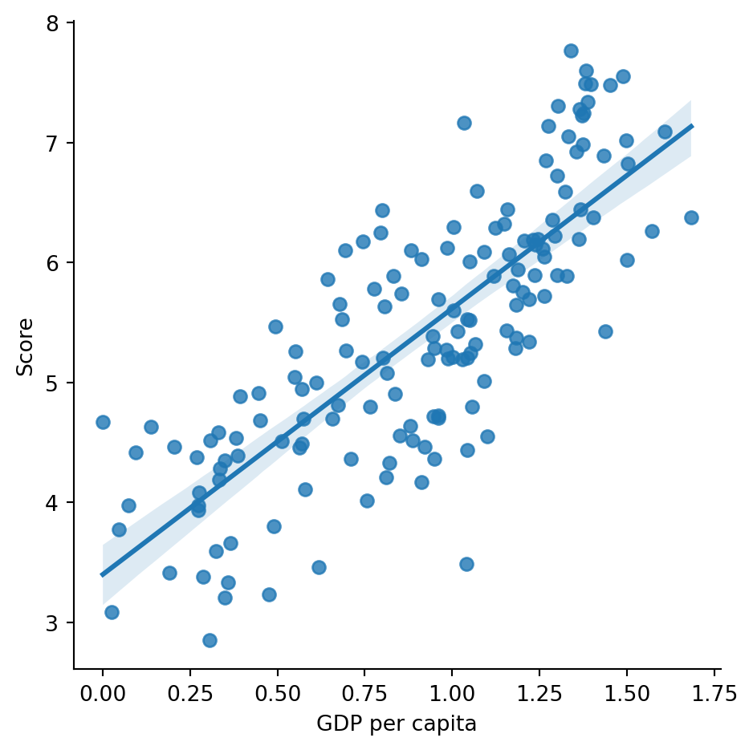

Linear regression is fancy way of describing the act of fitting a line through your data. What makes it powerful is it’s simplicity. When we are facing a regression problem this is usually the first thing we should try before moving on to more complex models. If you are looking for a detailed explanation on the intricacies of linear regression, I recommend taking a closer look at the wonderful book by James, Witten, Hastie and Tibshirani titled An Introduction to Statistical Learning (James et al. (2023)).
Regression in a nutshell
In regression we are trying to predict a numerical (continuous) variable based on one or more other variables. The variable we are trying to predict is called the dependent variable, and the variables we are using to make the prediction are called the independent variables. In the field of Data Science, the dependent variable can sometimes be called the outcome, and the independent variables might be referred to as features.
9.1 Simple linear regression
Simple linear regression is the most basic form of regression. It is used when we want to use the values of a single independent variable to predict the values for the dependent variable. To put it simply, the goal is to find the best-fitting straight line through the data. The equation for a simple linear regression model is:
\[
y = \beta_0 + \beta_1x \text{,}
\tag{9.1}\]
where \(y\) is the dependent variable, \(x\) is the independent variable, \(\beta_0\) is the intercept, \(\beta_1\) is the slope.
Let’s see how we can implement simple linear regression in Python using the scikit-learn library. Scikit-learn is one of the most fundamental machine learning libraries for Python. It provides a wide range of tools for building machine learning models, including regression models. Before we start, we need to install the library. You can do this by running the following command in your terminal:
pip install scikit-learn
After installation, we are ready to implement a simple linear regression model. We will use data from the World Happiness Report 2019, which is available through Kaggle (Kaggle Datasets (2024)). The World Happiness Report is a survey of the state of global happiness that ranks 156 countries by how happy their citizens perceive themselves to be. The dataset contains information about various factors that contribute to happiness, such as GDP per capita, social support, healthy life expectancy, freedom to make life choices, generosity, and perceptions of corruption (Table 9.1).
import pandas as pdimport seaborn as sns# get the diamonds datasethappiness = pd.read_csv('data/WorldHappinessReport2019.csv')happiness.head()
Table 9.1: The first rows of the World Happiness Report 2019 dataset.
Overall rank
Country or region
Score
GDP per capita
Social support
Healthy life expectancy
Freedom to make life choices
Generosity
Perceptions of corruption
0
1
Finland
7.769
1.340
1.587
0.986
0.596
0.153
0.393
1
2
Denmark
7.600
1.383
1.573
0.996
0.592
0.252
0.410
2
3
Norway
7.554
1.488
1.582
1.028
0.603
0.271
0.341
3
4
Iceland
7.494
1.380
1.624
1.026
0.591
0.354
0.118
4
5
Netherlands
7.488
1.396
1.522
0.999
0.557
0.322
0.298
Figure 9.1 visualizes the relationship between a country’s happiness Score and GDP per capita. We can see that, on average countries with higher GDP per capita exhibit higher levels of happiness.
sns.lmplot(x='GDP per capita', y='Score', data=happiness)

Figure 9.1: A scatter plot showing the relationship between the happiness score and the GDP per capita. Note that correlation does not imply causation.
9.1.1 Fitting the model with scikit-learn
Above we used our seaborn knowledge to visualize the linear relationship. However, this doesn’t actually give as a model with stored parameter values. In order to actually fit the model shown in Equation 9.1, we can use LinearRegression from scikit-learn.
from sklearn.linear_model import LinearRegression# create a linear regression model objectmodel = LinearRegression()# fit the model to the datamodel.fit(X=happiness[['GDP per capita']], y=happiness['Score'])# print the model coefficientsmodel.coef_, model.intercept_
(array([2.218148]), 3.399345178292417)
Let’s go throught the code above line by line. First, we import the LinearRegression Estimator from the sklearn.linear_model family of models. Next, we create a LinearRegression object called model. We then fit the model to the data using the fit method. The fit method takes two arguments: the independent variable X and the dependent variable y. In this case, we are using GDP per capita as the independent variable and Score as the dependent variable. Finally, we print the model coefficients. The coef_ attribute contains the slope of the line, and the intercept_ attribute contains the intercept.
Let’s now look at Figure 9.1 again, to help us understand the model we just fitted. The slope of the line is the coefficient for GDP per capita (\(\beta_1\) in Equation 9.1), and the intercept is the value of the dependent variable when GDP per capita is zero. In other words, the intercept is the y-value where the fitted line crosses the y-axis. By looking at the plot, we can see that the intercept is around 3.4, which is the result we got from our fitted model as well. The slope is around 2.2, which means that for every unit increase in GDP per capita, the Score increases by 2.2 units. This is the beauty of linear regression - it gives us a simple and interpretable model that we can use to make predictions.
9.1.2 Making predictions
Now that we have a fit for our model to the data, we can use it to make predictions. In this case the model is very simple, so we could easily calculate the predictions by hand as well. Let’s predict the happiness score for the countries in the dataset. The results for the first five entries are displayed in Table 9.2.
# make a prediction for a GDP per capita of 1.5X_new = happiness[['GDP per capita']]preds = model.predict(X_new)## create a dataframe with the predictions, GDP per capita and the actual scorepreds_df = pd.DataFrame({'GDP per capita': X_new['GDP per capita'],'Predicted score': preds,'Actual score': happiness['Score']})preds_df.head()
Table 9.2: The actual happiness score and the predicted score based on the GDP per capita.
GDP per capita
Predicted score
Actual score
0
1.340
6.371663
7.769
1
1.383
6.467044
7.600
2
1.488
6.699949
7.554
3
1.380
6.460389
7.494
4
1.396
6.495880
7.488
The GDP per capita value for the first entry is 1.34. Let’s calculate the predicted score “by hand” using the model coefficients:
# calculate the predicted score for the first entrypredicted_score = model.intercept_ + model.coef_[0] *1.34predicted_score
6.371663499643615
Lo and behold, we get the same result as by using the predict method (as we should).
9.1.3 Evaluating model performance
Now that we have our predictions, we are ready to evaluate how successful we were with the fitting process. There are different ways to evaluate the performance of a regression model, but we are going to look at three commonly used metrics. Namely:
where \(y_i\) is the actual value for the \(i\)th observation, \(\hat{y}_i\) is the corresponding predicted value, and \(n\) is the number of observations. So basically we are just looking at the average of the squared differences between the actual and predicted values. RMSE is simply the square root of the MSE:
We can now calculate these metrics for our model. Let’s add squared and absolute differences to the predictions dataframe and calculate the metrics. Table 9.3 shows the head of the updated dataframe.
# calculate the squared and absolute differencespreds_df['Sqr. diff'] = (preds_df['Actual score'] - preds_df['Predicted score'])**2preds_df['Abs. diff'] =abs(preds_df['Actual score'] - preds_df['Predicted score'])preds_df.head()
Table 9.3: The squared and absolute differences between the actual and predicted scores for the first five entries.
GDP per capita
Predicted score
Actual score
Sqr. diff
Abs. diff
0
1.340
6.371663
7.769
1.952549
1.397337
1
1.383
6.467044
7.600
1.283590
1.132956
2
1.488
6.699949
7.554
0.729402
0.854051
3
1.380
6.460389
7.494
1.068351
1.033611
4
1.396
6.495880
7.488
0.984303
0.992120
We can now calculate the MSE, RMSE, and MAE for the model.
Scikit-learn also provides a convenient way to calculate these metrics using the mean_squared_error and mean_absolute_error functions from the sklearn.metrics module. Let’s see if we get the same results using these functions.
from sklearn.metrics import mean_squared_error, mean_absolute_errorMSE = mean_squared_error(happiness['Score'], preds)RMSE = mean_squared_error(happiness['Score'], preds, squared=False)MAE = mean_absolute_error(happiness['Score'], preds)MSE, RMSE, MAE
Phew, what a relief! The results are the same as with our manual calculation. These convenient functions are actually the one’s we’ll be using from now on.
We have now successfully fitted a simple linear regression model to the data, made predictions, and evaluated the model’s performance. Unfortunately, as it turns out, we have taken some shortcuts in the process which we need to address.
Warning
You should never use all you data to fit a model. The reason is that the model will be biased towards the data it has seen, and has a higher probability of not generalizing well to new data. There is a large risk of something called overfitting, which we will learn more about in the next section.
9.2 Re-fitting the model the proper way
In the previous example, we used only one feature to predict the happiness score. However, oftentimes we want to use multiple features to make the prediction. This is called multiple linear regression. The equation for multiple linear regression is:
\[
y = \beta_0 + \sum_{i=1}^{n} \beta_i x_i \text{,}
\tag{9.2}\]
where \(y\) is the dependent variable, \(x_1, x_2, \ldots, x_n\) are the independent variables, \(\beta_0\) is the intercept, and \(\beta_1, \beta_2, \ldots, \beta_n\) are the coefficients for each independent variable.
Now, there is actually nothing wrong with using only a single feature to predict the happiness score. However, we did take some shortcuts regarding other aspects of the model fitting process. One of the most important aspects is splitting the data into training and test sets, which we’ll learn about next.
9.2.1 Train-test split
Splitting the data into training and test sets is a crucial step in the machine learning workflow. It is such a standard procedure that scikit-learn comes with a built in function to help us get the job done. This is important because we want to evaluate the model on data that it hasn’t seen before. This helps prevent overfitting, and see how well the model performs on new data. However, before we are ready to split the data into training and test sets, we first need to decide which features to use in our model. This usually means dividing the data into features (X) and the target variable (y). We’ll use all the numeric columns except the Score column as features, and the Score column as the target variable.
X = happiness[['GDP per capita', 'Social support', 'Healthy life expectancy', 'Freedom to make life choices', 'Generosity', 'Perceptions of corruption']]y = happiness['Score']
Splitting the data…
from sklearn.model_selection import train_test_splitX_train, X_test, y_train, y_test = train_test_split( X, y, test_size=0.20, random_state=123 )
Now we are ready to fit the model using the training data.
model2 = LinearRegression()# fit the model to the training datamodel2.fit(X_train, y_train)# save the model coefficients to a dataframecoefficients = pd.DataFrame({'feature': X.columns,'coefficient': model2.coef_})
Here we only used the training data to fit the model. This means that the model has never seen the test data before, and we can use it for getting an unbiased estimate of the model’s performance. Table 9.4 shows the coefficients for each feature in the fitted linear regression model.
Table 9.4: The coefficients for each feature in the fitted linear regression model.
feature
coefficient
0
GDP per capita
0.864532
1
Social support
1.038075
2
Healthy life expectancy
1.113857
3
Freedom to make life choices
1.651626
4
Generosity
0.982648
5
Perceptions of corruption
0.853486
9.2.2 Evaluating the model
Now that we have fitted the model, we can evaluate its performance on the test data. One common metric for regression models is the mean squared error (MSE). The MSE is calculated by taking the average of the squared differences between the predicted and actual values. A lower MSE indicates a better model.
from sklearn.metrics import mean_squared_error# make predictions on the test datay_pred = model2.predict(X_test)# calculate the mean squared errormse = mean_squared_error(y_test, y_pred)mse
0.3104436244813814
James, Gareth, Daniela Witten, Trevor Hastie, and Robert Tibshirani. 2023. An Introduction to Statistical Learning with Applications in Python. Springer. https://www.statlearning.com/.